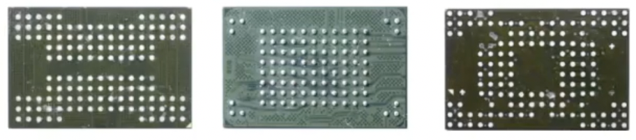
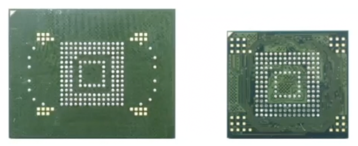
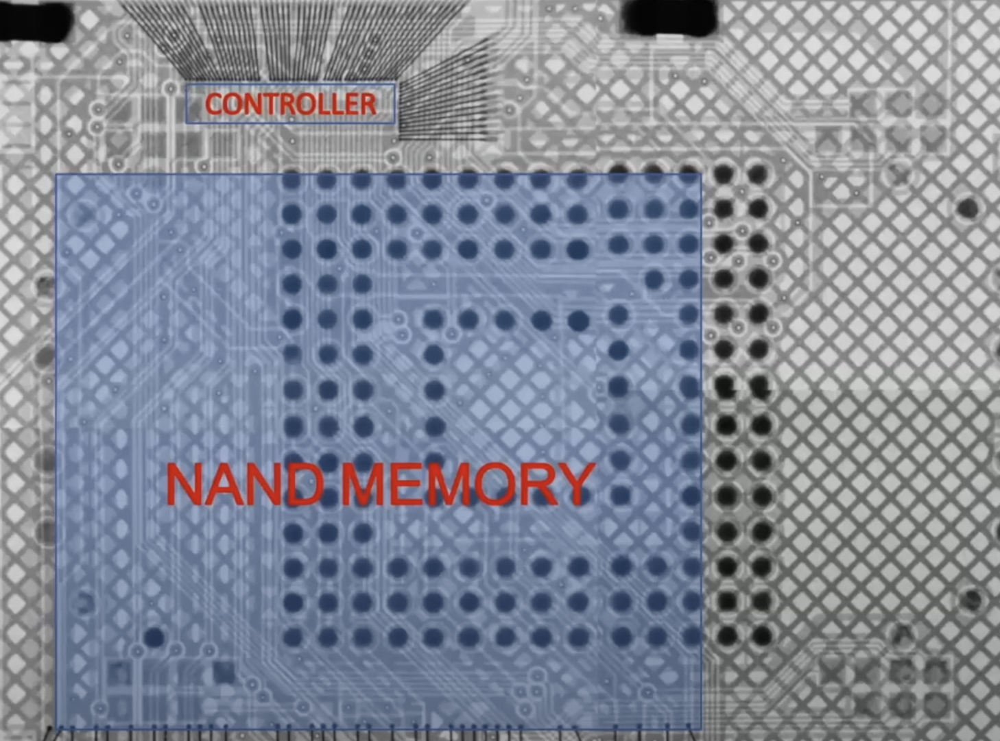
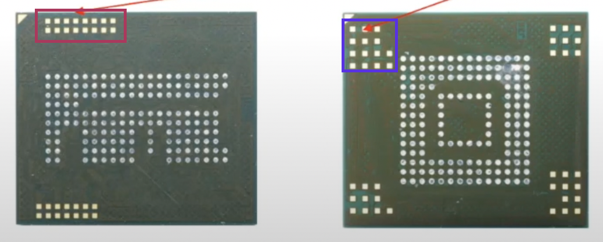
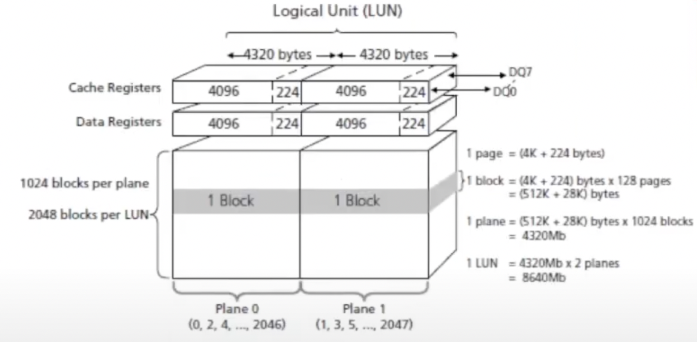
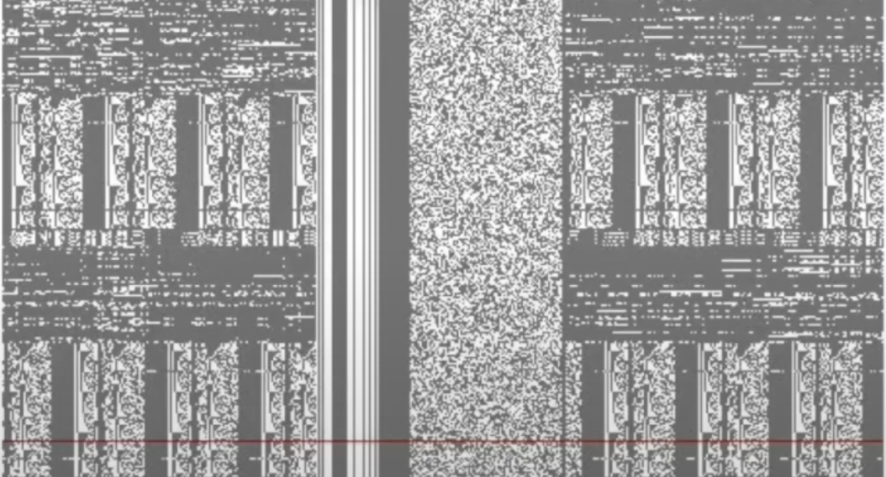
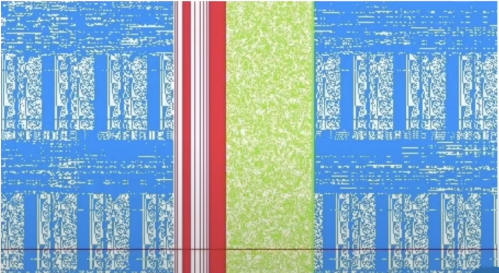

In this article I’m going to give a general overview of how SSD works and how it’s different from an HDD.
SSDs consist of NAND memory chips, a power terminal and a data terminal. Due to its nature, data cannot be overwritten, therefore, it needs to be white clean first.
🔎 Does it mean that there is no data in the unallocated or slack space?
Data is written in pages and deleted in blocks (multiple pages).
Raw NAND vs eMMC
eMMC = controller + NAND. Raw NAND chips use NAND protocol. We need some device to emulate the controller in order to retreive the data from the NAND chip. Controller has a buffer, which stores some amount of pages. Reads/writes pages to NAND or erases blocks from NAND.

With eMMC you are forced to work through the built in controller, using eMMC protocol. However, under the hood the NAND inside still uses NAND protocol to talk to the controller. These chips are popular for many devices (except for Apple ones). QNX environment - real-time operating system.


What are these gold pads? They are techno pads used by the manufacturer to do testing, debugging. Is this a way to talk to this chip directly? The lock sits in the controller chip.

Structure
There lots of flavours of flash chips but as far as I understand they are primarily of the same structure [1].
Page
The smallest read 👀 and write ✍️ unit is a page 📄. Each page consists of DATA, SA and ECC sections. Service Area consists of the Header, LBN and data. A page can get up to 4096 bytes in size (0.5-16Kb) + 224 bytes (spare area, used to mark bad blocks and to hold the ECC data [3]). There are three different ways to arrange data on a page i.e. page layout (see the picture below [1]):
- all data then all spare area.
- chunks of data and spare area where spare area might have varying size.
- chunks of data and spare area where spare area has a fixed size.

Data area 🗄️ is of constant size within one page and can be 512, 1024 or 2048 bytes.
Spare area 🤪. Depending on the page layout (shown above), it can have the following structure:
- header (1 byte) + 1 byte of free space + LBN (logical block number, 2 bytes) + 2 bytes of free space + ECC (10 bytes).
- the larger areas have LBN + 2bytes + ECC, the smaller ones - 2 bytes + ECC.
- chunks between data areas (122 bytes in size in the picture above) are ECC. At the end of a page there are 122bytes for ECC again + 1 byte of free space + header (1 byte) + 2 bytes of free space + LBN (logical block number, 2 bytes) + 42 bytes of free space.
ECC (error correction code 🤔).
Block
128 pages make up a block 🧱. Now, a block is the smallest erase eraser ✏️ unit. Its size can vary between 128Kb and 4Mb, depending on the page size I guess. There are two types of blocks. Physical blocks contain user data, system data, firmware, cache, obsolete user data. Logical blocks only contain actual user data. After we’ve acquired the physical dump, we need to perform certain operations with it to get the user data. The process is called block management. Physical blocks contain user data, system data, firmware, cache, obsolete user data. Logical block only contain actual user data.
Plane
Physically adjacent blocks (1024 of them, to be precise) form a plane ✈️. Following the calculation it can get as big as 4320Mb.
LUN
Logical unit (LUN) 📁 is comprised of two planes ✈️✈️ and therefore is up to 4320Mb in size (at the moment of the writing and to my knowledge at least).

Main Characteristics
Wear Leveling
The data is spread evenly accross the chips. That gives birth to certain problems like the one described on Magnet Summit 2021 (see here). This is needed because each chip has a finite amount of writes to it.
Trim
SSD’s controller identifies areas of the chips no longer in use and wipes them.
Garbage Collection
Re-organizes the data and then wipes the chips. So, the hash of the drive is going to be different from time to time. Write blocker is of no use here, since these changes are happening internally.
Chip-off
Data Recovery
Even though deleted data on a flash chip is known to be unrecoverable, it’s not completely true. Data is usually deleted in blocks (several pages, up to 4Mb). So, before the garbage collector and trim operation perform their duty, the data is still there. But, if you are imaging the flash chip via its controller, these areas won’t be returned since the controller already knows them to be discarded. However, if connecting directly to the NAND chip (which is loads harder), these areas that were not cleaned by the garbage collector but already unallocated, will be images as well. However this process is time consuming and sophisticated, so it surely depends on the case whether it’s worth doing so.
But the data is written to NAND randomly, so, in order to reconstruct the data we need to do some sort of emulation. But we don’t have such a tool. Using this Visual NAND reconstructor we can reconstruct the controller manually. Sometimes data is writen sequencially, so, 8Kb-4Mb (page or block) can be recovered easier: SMS, chats, GPS data, emails, contacts, logs, text data, thumbnails, pictures, zip, audio, video (from the most to the least recoverable).
Imaging Process
To acquire a physical image of a NAND chip in case no encryption is in place, you need to perform the following operations:
- Open up the device and get to the chip itself.
- Unsoldering the chip from the board.
- Cleaning the chip.
- Connecting the chip to the NAND reader. If not reader available, use techno pads and connect to the breakput board, then, using Visual NAND reconstructor (ruSolut) - read the chip.
- Acquire the image using some forensic tool like FTK or Magnet or etc.
Reconstruction steps
- Get the physical image (☝️)
- Determine the page layout. When you load this image into a Visual NAND reconstructor, you’ll get a bitmap representation of the data from the NAND chip. In order to read the contents you’ll have to determine the page layout. An example of before and after [1]:


- Determine the size and checksums for ECC ❓
- Determine the scrambling method (XOR or INV)
- Perform page allocation analysis. Which pages go into which blocks? What’s the sequencial order of these blocks?
- Block management constitutes the removal of all the blocks filtered by their headers except for the actual user data and then arranging it in the right order (using LBN from the service areas).
CMD42 Lock
You probably are already familiar with the ATA locks on HDDs. Usually 2.5’’ HDD, verify there is a lock with MHDD, PC 3000. This is usually set by the user in BIOS. No sectors can be read in this case. As far as I understand, it’s called a 88 block. It’s a little different for the eMMC chips.
In the case of an eMMC, if this lock is set (it’s called a CMD42 lock 🔐), the card can still be queried for reset, status, init and select, and access boot partition, RPMB and general partition area. RPMB (Replay Protect Memory Block) - first introduced in eMMC4.4. Allows storing data in a special address space that’s protected from replay attacks. Requires signing all read/write opeations.
References
[1] Presentation from Magnet Summit Webinar
[2] Low-level explanation
[3] Introduction to Nand Memories